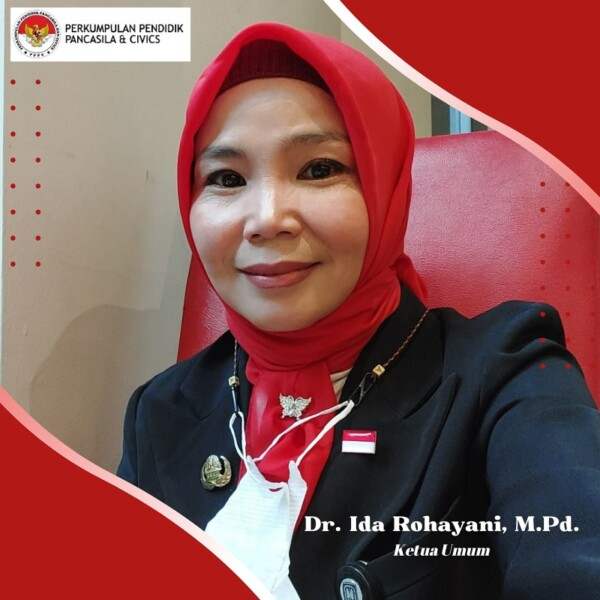

Selamat Datang di Website Resmi SMAN 3 Bandung
Situs ini menyajikan informasi resmi seputar kegiatan sekolah, prestasi, dan layanan untuk orang tua serta masyarakat. Jelajahi menu Berita untuk melihat kegiatan terbaru dan mendatang.
Sambutan Kepala Sekolah

Assalamu'alaikum wr. wb.Alhamdulillahirobbil'alamin, puji dan syukur marilah kita panjatkan kepada Allah SWT, karena atas rahmat-Nya kalian bisa diterima di SMAN 3 Bandung yang kalian dambakan ini.
Kedua orang tua kalian sudah pasti mengharapkan kesuksesan dan keberhasilan kalian dalam menuntaskan pendidikan di sekolah ini. Demikian juga dengan bapak dan ibu guru di sini.
Masa Pengenalan Lingkungan Sekolah atau MPLS adalah tahapan awal yang wajib kalian tempuh di tahun ajaran baru ini. lkutilah MPLS ini dengan penuh semangat dan gairah agar kalian memperoleh manfaat di dalamnya.
Ikutilah semua kegiatan dengan tata tertib dan aturan sekolah yang berlaku, sehingga kalian nantinya juga akan lebih terbiasa untuk menaati tata tertib yang ada.
Selain itu juga agar kalian menjadi peserta didik yang sesuai dengan visi dan misi sekolah ini, yaitu mewujudkan lulusan yang berakhlaq mulia, santun, berprestasi, berdaya saing, dan berwawasan lingkungan.
Kegiatan MPLS dilaksanakan mulai hari Senin, 17 - 19 Juli 2025 mendatang. Kalian akan diperkenalkan dengan lingkungan sekolah, guru dan karyawan, tata tertib sekolah dan cara belajar yang efektif serta juga kegiatan-kegiatan ekstrakurikuler yang ada di SMAN 3 Bandung.
Sekali lagi, saya ucapkan selamat datang dan pergunakanlah MPLS ini dengan sebaik-baiknya untuk mengenal dan mengetahui lebih jauh tentang situasi serta lingkungan yang berhubungan dengan sekolah kita ini.
Selamat mengikuti kegiatan MPLS, tetap semangat, semoga sehat dan bahagia selalu.
Wassalamu'alalkum wr. wb.
- Dr. Ida Rohayani, M.Pd.
Kepala Sekolah SMA Negeri 3 Bandung